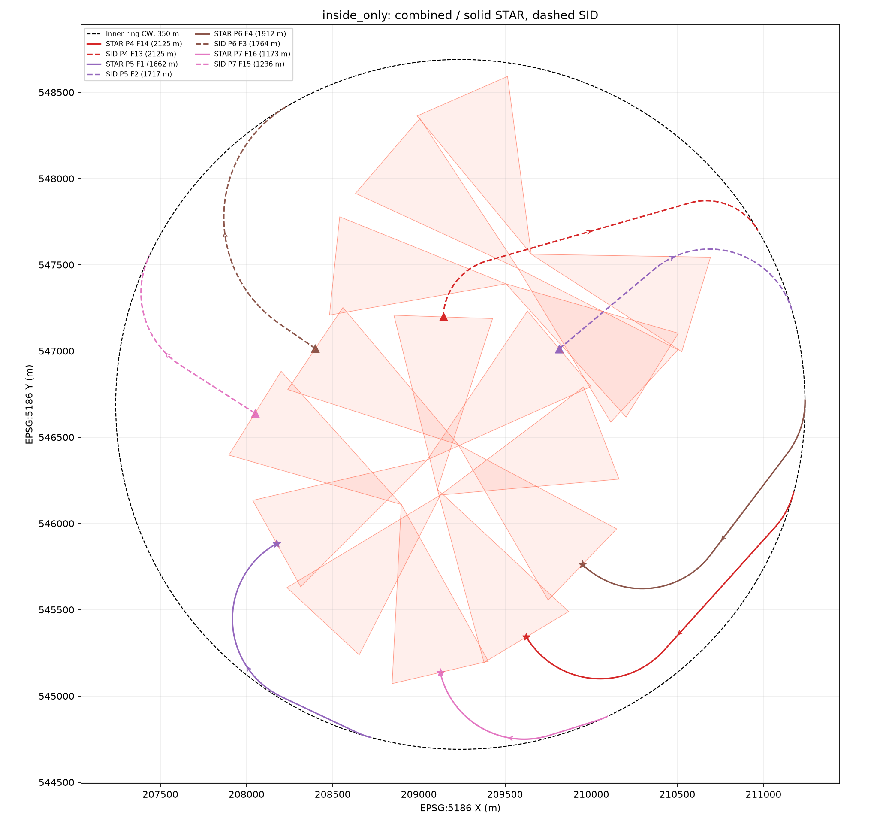
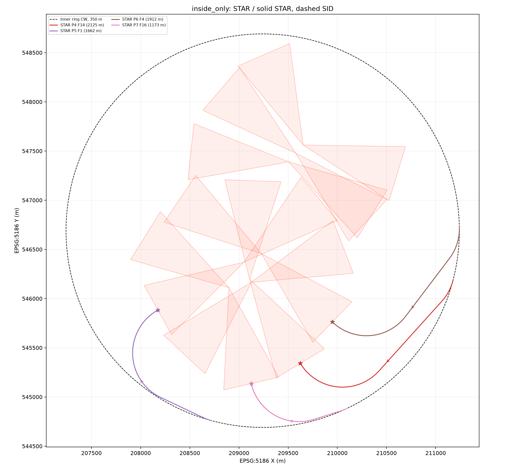
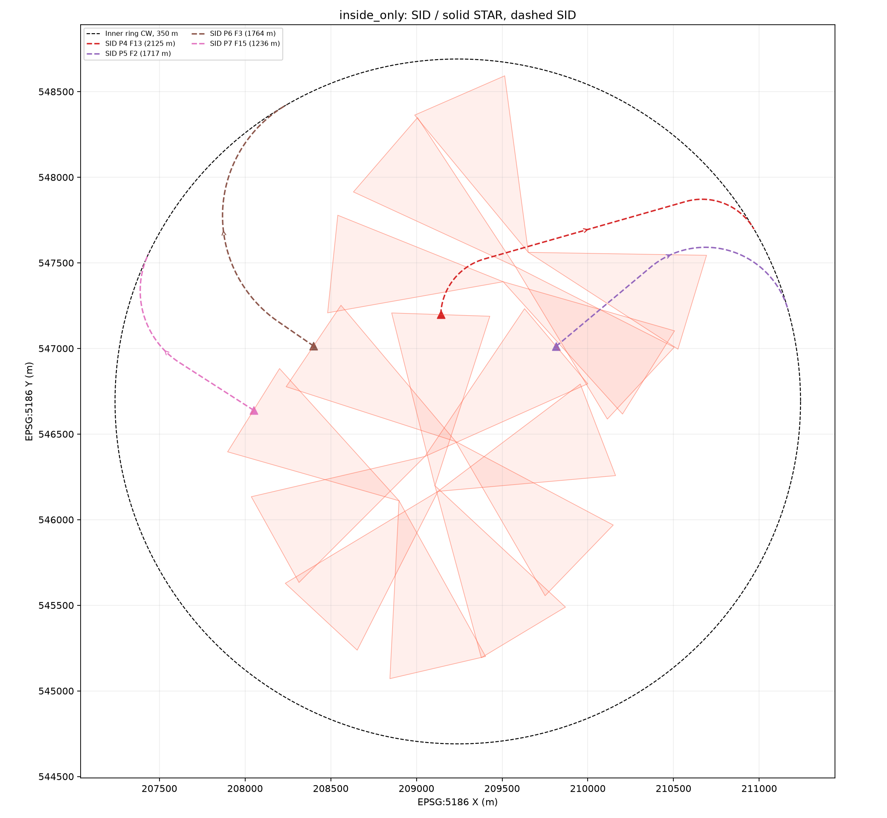
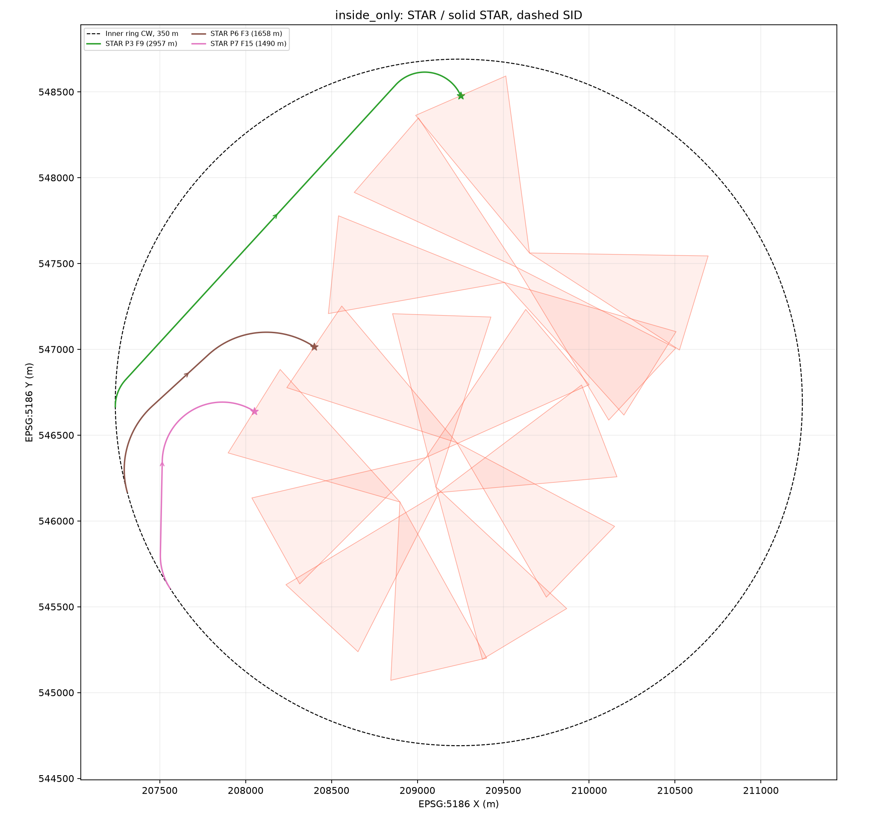
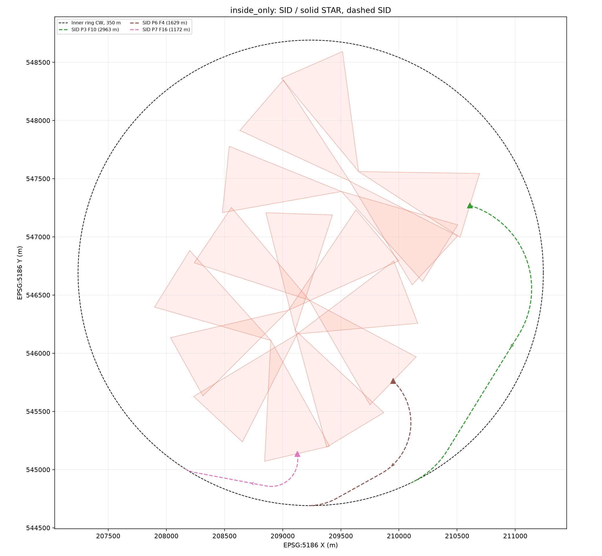
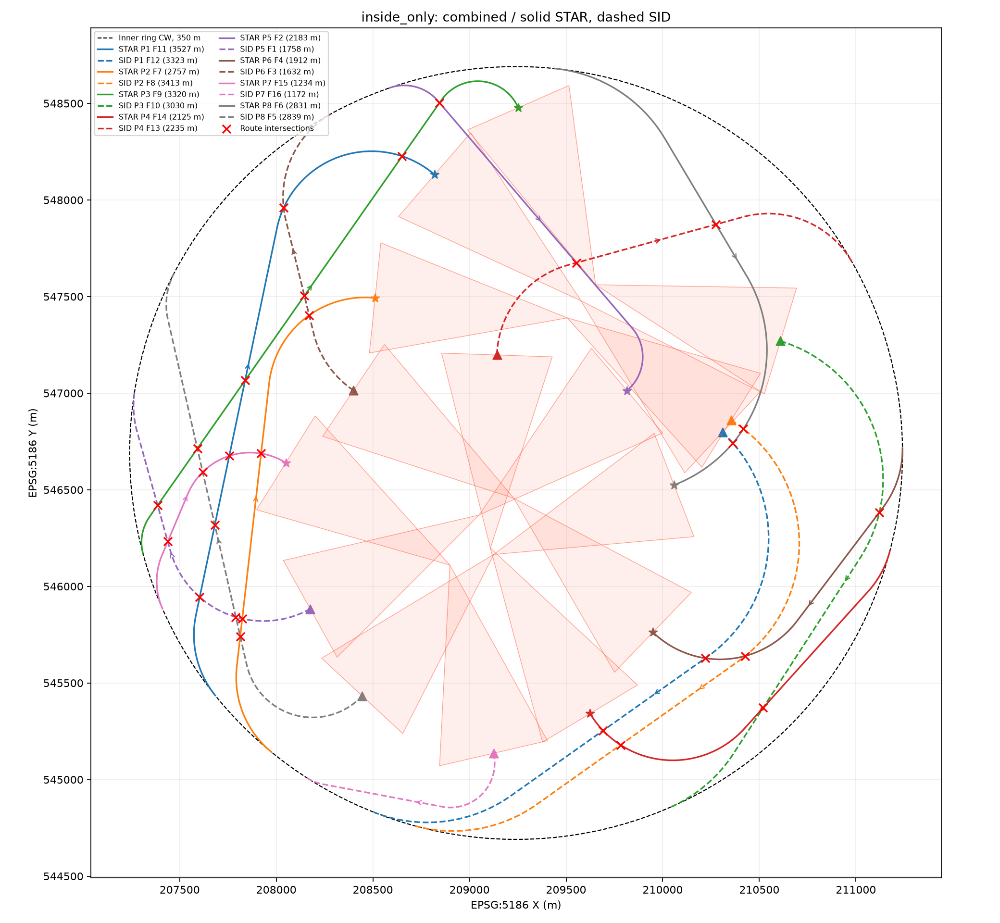
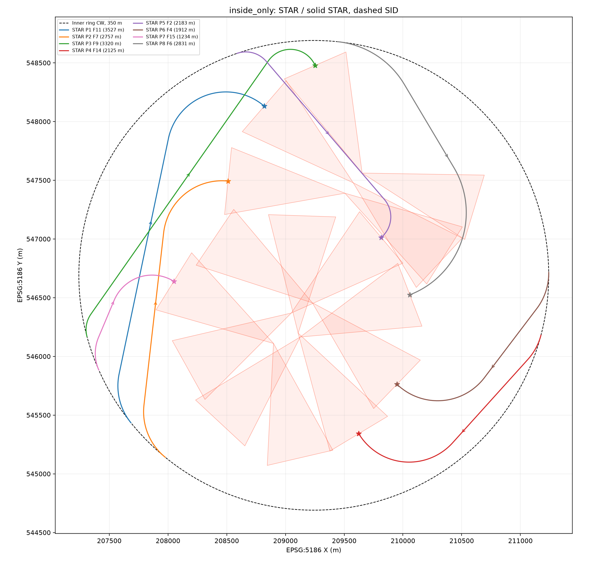
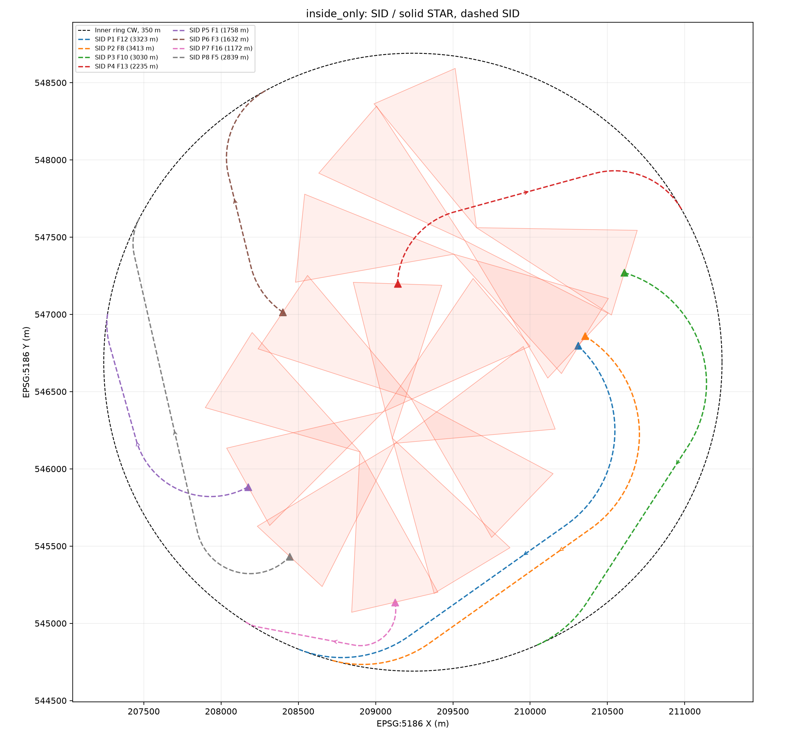
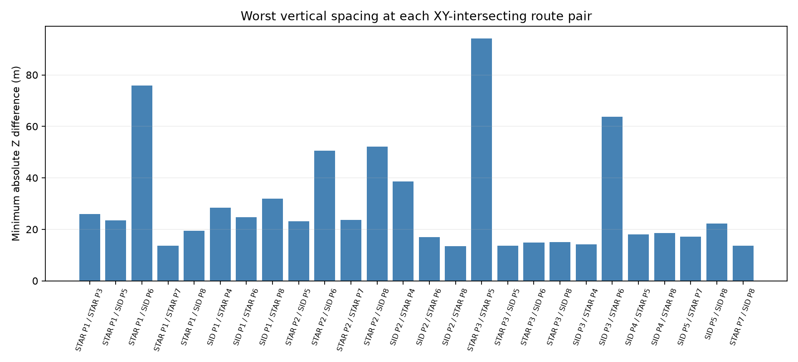
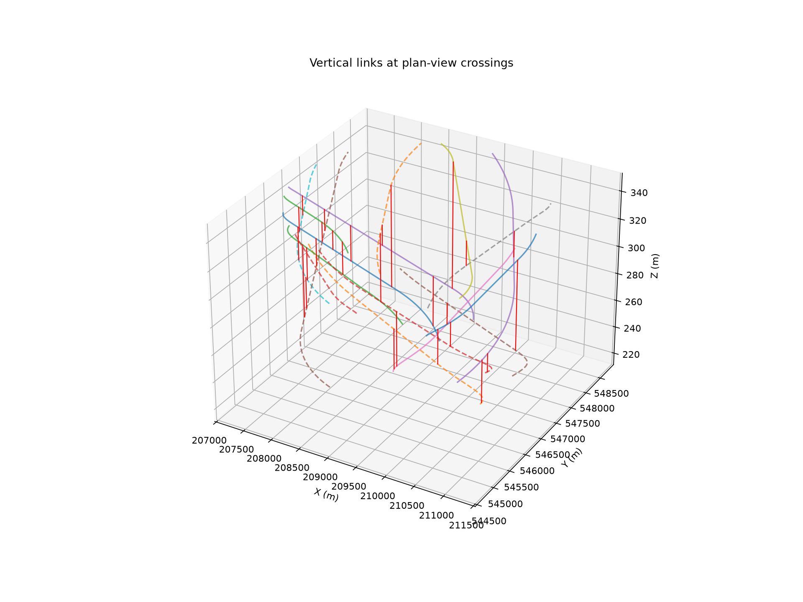

사용자 확인에 따라 두 조건을 다른 시나리오로 구분했습니다. 교차 금지를 충족하는 안에서는 교차점의 Z 간격이 정의되지 않습니다. 교차를 허용하는 대안에서는 전체 연결 범위를 유지한 채 모든 교차점의 최소 |ZA−ZB|를 최대화합니다.
수직 간격이 크다는 이유만으로 실제 운항 안전성이 입증되는 것은 아닙니다. 이전의 70m를 하드 기준으로 재적용하지 않았으며, 정해진 수직 분리값을 충족한다고 주장하지 않습니다. 시각·풍향·기체 운항 성능은 포함하지 않은 기하 분석입니다.
기존 조건 유지: 링 350m·내부 경계, FAF alt, 70↔60kt, CW RSR, 구배와 뱅크 제한, 총 선회 180° 형태 필터·자기교차 금지·반대편 FAF의 STAR/SID 배정·기존 Landing_Area 처리. 수직 간격을 늘리기 위해 원본 고도나 경로의 Z 보간을 임의로 변경하지 않았습니다.
FAF 4쌍, Approach 4개 / Departure 4개. XY 교차 0쌍, 교차점 최소 수직 간격: 교차점 없음. Landing_Area 관통 6건.
Approach SHP · Departure SHP · IAF 점 · FAF 점 · 교점별 두 항로 높이 CSV



FAF 3쌍, Approach 3개 / Departure 3개. XY 교차 0쌍, 교차점 최소 수직 간격: 교차점 없음. Landing_Area 관통 0건.
Approach SHP · Departure SHP · IAF 점 · FAF 점 · 교점별 두 항로 높이 CSV



FAF 8쌍, Approach 8개 / Departure 8개. XY 교차 26쌍, 교차점 최소 수직 간격: 13.516m. Landing_Area 관통 9건.
Approach SHP · Departure SHP · IAF 점 · FAF 점 · 교점별 두 항로 높이 CSV





두 항로의 XY 교점을 구한 뒤, 각 항로의 원본 XYZ에서 독립적으로 높이를 보간합니다. 교점이 여러 개면 가장 작은 간격을 사용합니다. XY 중첩 구간은 두 항로의 모든 꺾임점을 포함해 높이 차가 0이 되는 위치까지 검사합니다. Shapely가 교점 기하에 넣는 혼합 Z는 사용하지 않습니다.
crossing_points_z.shp의 기하 Z는 표시용 중간 높이이며 z_a/z_b가 실제 항로 높이입니다. crossing_levels_z.shp는 같은 XY에 각 항로의 실제 높이 점 두 개를 저장합니다.
최적성은 저장된 선별 후보 안의 의미입니다. 전체 연속 경로나 모든 원자료 후보 조합의 전역 최적성은 주장하지 않습니다. 시간 제한은 불가능성 증명으로 해석하지 않습니다.
python -B 수정본_20261103/코드/optimization_path.py --inside-new-options